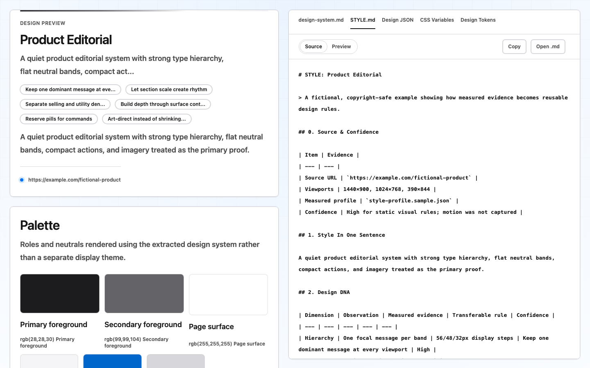
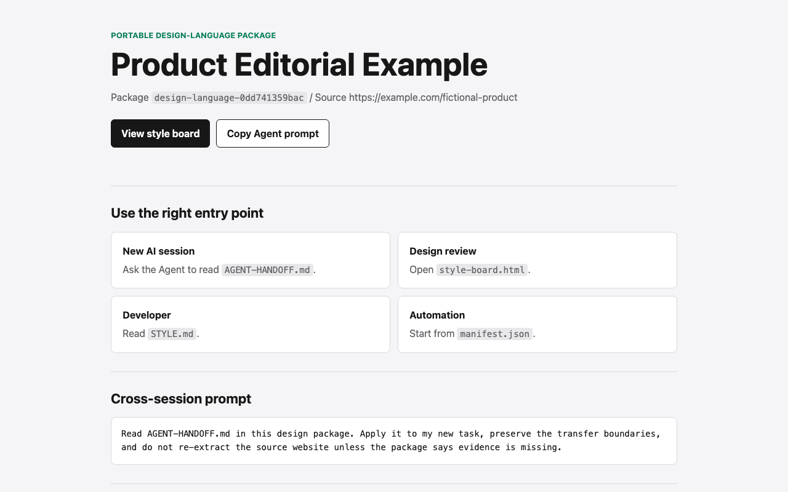

STYLE.md可迁移的视觉规则与设计边界。
开源 · MIT · Agent 中立
把一个网站，变成任何 Agent 都能复用的设计语言。
采集真实浏览器证据，分离测量与判断，交付一个可跨项目、跨模型、跨 session 使用的 design-package。

01 / WHY
真正难的不是抄出黑字、白底和蓝按钮，而是找出页面为什么成立。
第一次复刻看起来很接近，但图标缺失、图片裁切错误、移动端素材不对、页面也不完整。继续写提示词解决不了问题，因为 Agent 拿到的是印象，不是系统。
HTML2Style 把“看起来像”改写成“有证据、能迁移、可验证”。
采集 inline SVG、sprite 与渲染尺寸。
区分容器、渲染和原始几何。
记录 picture、srcset 与高度条件。
审计结构、数量、页高与资源健康。
02 / OUTPUT
不再让用户面对一堆不知道先开哪个的文件。每个 design-package 都从同一个清晰入口开始。

STYLE.md可迁移的视觉规则与设计边界。
style-profile.json工具可直接读取的确定性测量。
style-board.html给人类评审的视觉呈现。
AGENT-HANDOFF.md新 session 的自包含上下文。
manifest.json稳定 ID、文件角色和证据缺口。
evidence/截图、DOM、资源与响应式来源。
03 / WORKFLOW
每一步都留下可检查的中间产物。Agent 可以解释结论来自哪里，而不是把猜测包装成规则。
在宽度和高度条件下渲染真实页面。
采集字体、颜色、间距、图片、图标与结构。
分开确定性证据与 Agent 设计判断。
保留设计逻辑，替换品牌身份和受保护素材。
检查资源、响应式覆盖与完整复刻范围。
保留 / RETAIN
层级、节奏、密度、形状、图片策略、响应式逻辑。
替换 / REPLACE
Logo、品牌文案、专有摄影、图标和独特 campaign 概念。
04 / PORTABLE
运行时是 CLI 与 MCP。Skill、AGENTS.md、CLAUDE.md、Cursor 和 Copilot 文件只是发现层，不是依赖。
# 1. Check the portable browser chain
$ html2style doctor
# 2. Capture five responsive conditions
$ html2style extract https://example.com \
evidence.json --profile full
# 3. Create one cross-session package
$ html2style bundle design-package \
--style STYLE.md \
--profile style-profile.json \
--board style-board.html05 / POSITION
HTML2Style 解决的是设计上下文交接：让另一个 Agent 在另一个 session 中，仍然知道什么被测量、什么可迁移、什么必须替换。